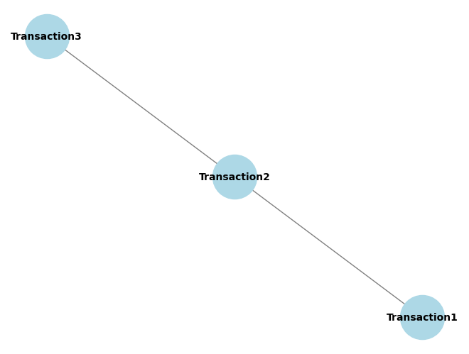

import networkx as nximport matplotlib.pyplot as plt# 그래프 생성G = nx.Graph()# 노드 추가 (각 노드는 거래를 나타냄)transactions = ['Transaction1', 'Transaction2', 'Transaction3']for transaction in transactions: G.add_node(transaction)# 간선 추가 (간선은 거래 간의 관계를 나타냄)edges = [('Transaction1', 'Transaction2'), ('Transaction2', 'Transaction3')]G.add_edges_from(edges)# 그래프 시각화nx.draw(G, with_labels=True, node_color='lightblue', node_size=2000, font_size=10, font_weight='bold', edge_color='gray')plt.show()

import networkx as nximport matplotlib.pyplot as pltimport numpy as np# Number of nodes and edgesN =5num_edges =6# Generate a random graphG = nx.gnm_random_graph(N, num_edges)# Generate adjacency matrixA = nx.adjacency_matrix(G).todense()# Generate random node featuresP =3X = np.random.rand(N, P)# Plot the graphplt.figure(figsize=(6, 4))nx.draw(G, with_labels=True, node_color='lightblue', node_size=1000, font_size=12)plt.title('A simple graph with 5 nodes')plt.savefig('simple_graph.pdf', format='pdf')plt.show()print("Adjacency Matrix (A):")print(A)print("\nNode Features Matrix (X):")print(X)
import networkx as nximport numpy as np# Generate a random graphG = nx.gnm_random_graph(5, 6)# Generate adjacency matrixA = nx.adjacency_matrix(G).todense()# Generate random node featuresP =3X = np.random.rand(5, P)# Generate random weightsW = np.random.rand(5, 5)print("Graph with Node Features:")print(G.nodes(data=True))print("\nAdjacency Matrix:")print(A)print("\nNode Features Matrix:")print(X)print("\nWeight Matrix:")print(W)